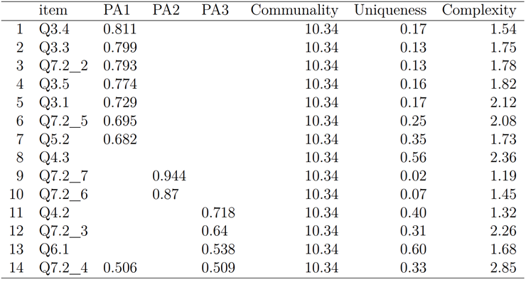
Designing Domain-Specific Data Science Materials and Leveraging Long-Term Practice
PyCon 2022 Education Summit
Thursday, April 28, 2022
Goshute

- https://native-land.ca/
Tutelo

- https://native-land.ca/
Thank You
I’m developing a presentation for @seruff_ using @quarto_pub presentations.
— Beatriz Milz (@BeaMilz) April 16, 2022
I started to implement a similar theme as the xaringan @RLadiesGlobal theme made by @apreshill !
If anyone wants to help to improve it, It would be awesome 💜 #rladies #RStats https://t.co/xps1v49Ku4 pic.twitter.com/sK9d3X3unE
Daniel Chen, PhD, MPH
Postdoctoral Research and Teaching Fellow, UBC, MDS-Vancouver
Data Science Educator, RStudio, PBC (RStudio Academy)
The Carpentries
Author, Pandas for Everyone
Thank You Again
https://us.pycon.org/2021/summits/education-training/
Data Science in the Biomedical Science
Data Science Programs Are Too General
- Data science programs target single broad audiences
- Opportunity to branch out to different disciplines
- Democratization of data science education enables more domain specific learning materials
Informatics Interest Outpace Opportunities
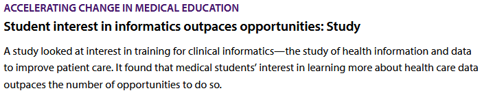- Students who are interested in a clinical informatics related career
- Not aware of training opportunities
- Need to increase: quantity, quality, and publicity
- American Medical Association. Accelerating Change in Medical Education. American Medical Association. Accessed February 10, 2021. https://www.ama-assn.org/education/accelerating-change-medical-education
- Banerjee R, George P, Priebe C, Alper E. Medical student awareness of and interest in clinical informatics. Journal of the American Medical Informatics Association. 2015;22(e1):e42-e47. doi:10.1093/jamia/ocu046
Excel
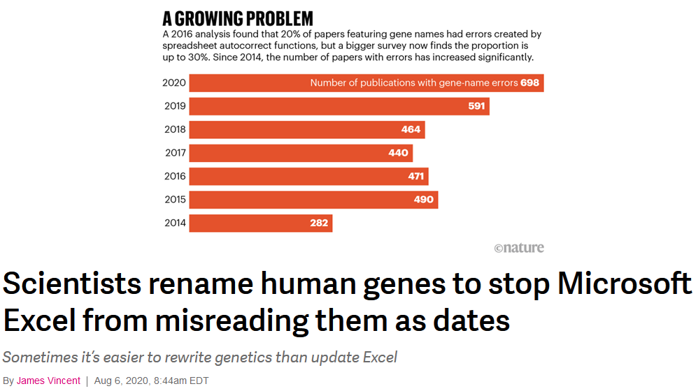- Lewis D. Autocorrect errors in Excel still creating genomics headache. Nature. Published online August 13, 2021. doi:10.1038/d41586-021-02211-4
- Vincent J. Scientists rename human genes to stop Microsoft Excel from misreading them as dates. The Verge. Published August 6, 2020. Accessed December 8, 2021. https://www.theverge.com/2020/8/6/21355674/human-genes-rename-microsoft-excel-misreading-dates
Consequences of Reproducibility Failures

- Aboumatar, Hanan and Robert A. Wise (Oct. 2019). “Notice of Retraction. Aboumatar et al. Effect of a Program Combining Transitional Care and Long-Term Self-Management Support on Outcomes of Hospitalized Patients With Chronic Obstructive Pulmonary Disease: A Randomized Clinical Trial. JAMA. 2018;320(22):2335-2343.” In: JAMA 322.14, pp. 1417–1418. issn: 0098-7484. doi: 10.1001/jama.2019.11954
- Kelion, Leo (Oct. 2020). “Excel: Why Using Microsoft’s Tool Caused Covid-19 Results to Be Lost”. en-GB. In: BBC News.
- Ostblom J, Timbers T. Opinionated practices for teaching reproducibility: motivation, guided instruction and practice. arXiv:210913656 [cs, stat]. Published online September 17, 2021. Accessed November 30, 2021. http://arxiv.org/abs/2109.13656
- Wallensteen, Lena et al. (2018). “Retraction notice to” Evaluation of behavioral problems after prenatal dexamethasone treatment in Swedish adolescents at risk of CAH”[Hormones and Behavior 85C (2016) 5-11]”. In: Hormonesand behavior 103, p. 140.
- Whitehouse, Harvey et al. (July 2021). “Retraction Note: Complex Societies Precede Moralizing Gods throughout World History”. en. In: Nature 595.7866, pp. 320–320. issn: 1476-4687. doi: 10.1038/s41586-021-03656-3.
- Zeeberg, Barry R et al. (2004). “Mistaken identifiers: gene name errors can be introduced inadvertently when using Excel in bioinformatics”. In: BMC bioinformatics 5.1, pp. 1–6.
- Ziemann, Mark, Yotam Eren, and Assam El-Osta (2016). “Gene name errors are widespread in the scientific literature”. In: Genome biology 17.1, pp. 1–3
Successful R-based Test Package Submitted to FDA
- Nov 22nd, 2021
- R Consortium R submission Pilot 1 Project
- R-language based submission package
- meet the needs and the expectations of the FDA reviewers
- assessing code review
- analyses reproducibility.
- R Consortium. Successful R-based Test Package Submitted to FDA. R Consortium. Published December 8, 2021. Accessed December 8, 2021. https://www.r-consortium.org/blog/2021/12/08/successful-r-based-test-package-submitted-to-fda. RConsortium.
- RConsortium/Submissions-Pilot1-to-Fda. R Consortium; 2021. Accessed December 8, 2021. https://github.com/RConsortium/submissions-pilot1-to-fda
Backward Design Learning Materials
- Identify your learners (learner persona)
- Plan out your lesson content (concept maps)
- Define overall goal (summative assessment)
- Break down the goal (formative assessment)
- Outline the course
- Write a summary of the course
- Wilson G. Teaching Tech Together: How to Make Your Lessons Work and Build a Teaching Community around Them. Taylor & Francis; 2019. http://teachtogether.tech
Identification of Biomedical Data Science Learner Persons
Implications and Lessons Learned for Domain-Specific Data Science Curriculum
What are Personas?
- Come from product design
- Detailed description of an imaginary person
- Embodies assumptions of the user and product
- Cannot and should not represent every possible user
- Pruitt J, Adlin T. The Persona Lifecycle: Keeping People in Mind Throughout Product Design. 1st edition. Morgan Kaufmann; 2006.
Why use personas in education?
- Minimize discrepancies on how people understand and communicate about users
- Make implicit assumptions explicit
- Stay focused on the users (user centric design)
- Pruitt J, Adlin T. The Persona Lifecycle: Keeping People in Mind Throughout Product Design. 1st edition. Morgan Kaufmann; 2006.
Creating a “Wrong” Persona
- Still backed by data
- “Product”is still consistent
- Personas are a work in progress
- Pruitt J, Adlin T. The Persona Lifecycle: Keeping People in Mind Throughout Product Design. 1st edition. Morgan Kaufmann; 2006.
Creating Learner Personas
- Self-assessment survey (33 questions)
- Clustered to identify personas (23 Questions)
- 2 Waves (N=67): Summer 2020 (N=51) + Summer 2021
- Demographics (6)
- Programs Used in the Past (1)
- *Programming Experience (6)
- *Data Cleaning and Processing Experience (4)
- *Project and Data Management (2)
- *Statistics (4)
- Workshop Framing and Motivation (3)
- *Summary Likert (7)
- Ambrose SA, Bridges MW, DiPietro M, Lovett MC, Norman MK. How Learning Works: Seven Research-Based Principles for Smart Teaching. John Wiley & Sons; 2010.
- Jordan KL, Michonneau F. Analysis of The Carpentries Long-Term Surveys (April 2020). Zenodo; 2020. doi:10.5281/zenodo.3728205.
- Jordan K, Michonneau F, Weaver B. Analysis of Software and Data Carpentry’s Pre- and Post-Workshop Surveys. Zenodo; 2018. doi:10.5281/zenodo.1325464.
- Wilson G. Teaching Tech Together: How to Make Your Lessons Work and Build a Teaching Community around Them. Taylor & Francis; 2019. http://teachtogether.tech
Ocupation
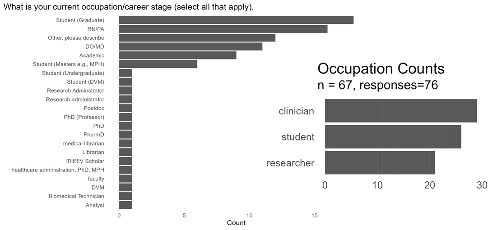EFA: Factor Loadings + Cronbah’s alpha
- PA1: Programming experience (7)
- 𝛼 = 0.96
- PA2: Programming for data analysis (2)
- 𝛼 = 0.98
- PA3: Solving technical problems (2)
- 𝛼 = 0.75
- EFA Factor loadings < 0.5 are supressed
- Cronbah’s 𝛼, loadings ≥ 0.6 were used
- Alpha caluclated using
psych::alpha(): https://github.com/chendaniely/dissertation-analysis/blob/master/analysis/020-validation/020-010-cronbah.Rmd#L76
Hierarchical Clustering for Personas
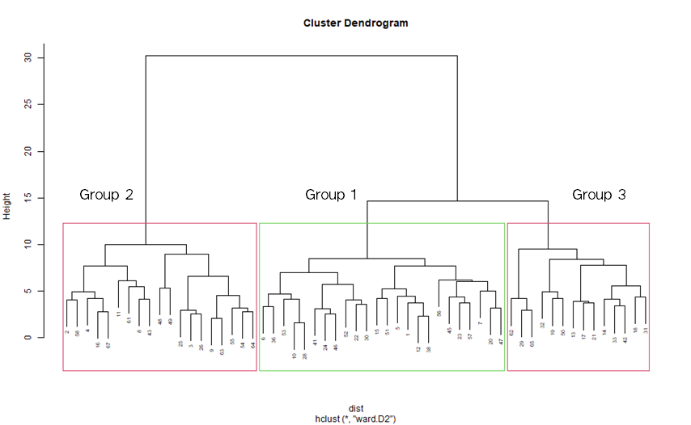Identifying Personas: Programming Experience
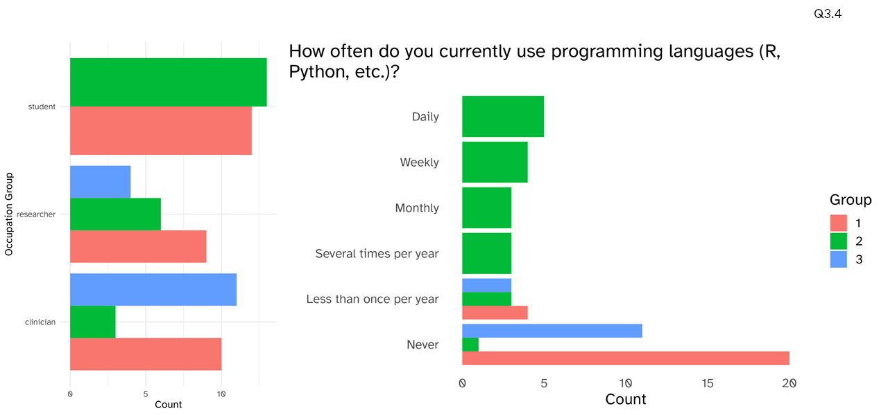Identifying Personas: Programming for Analysis
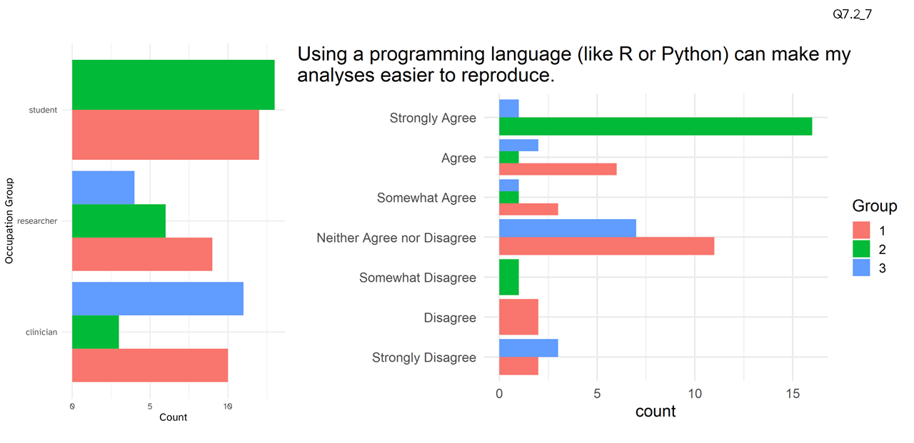Identifying Personas: Solving technical problems
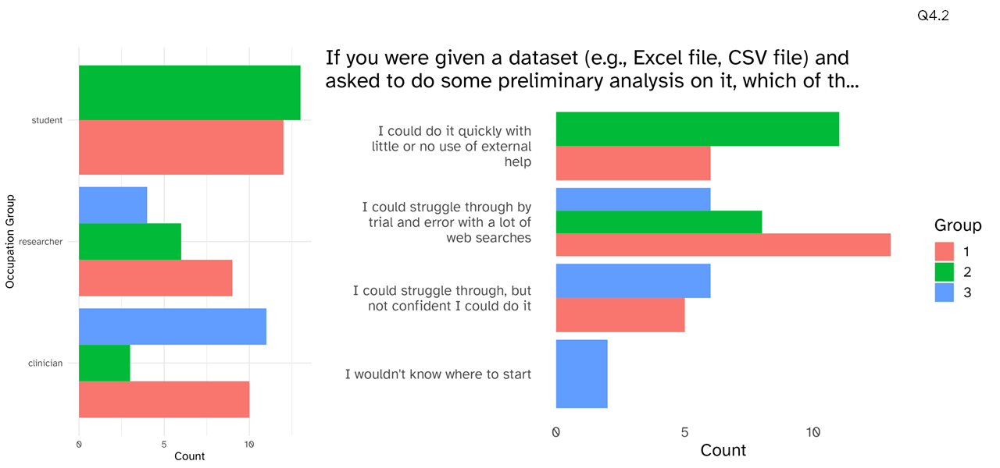Identifying Personas: Statistics
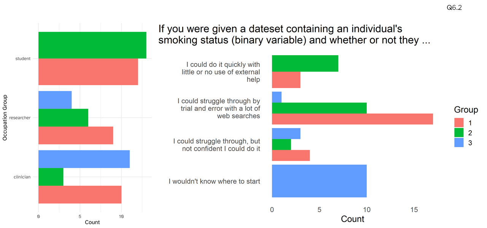Identifying Personas: Excel
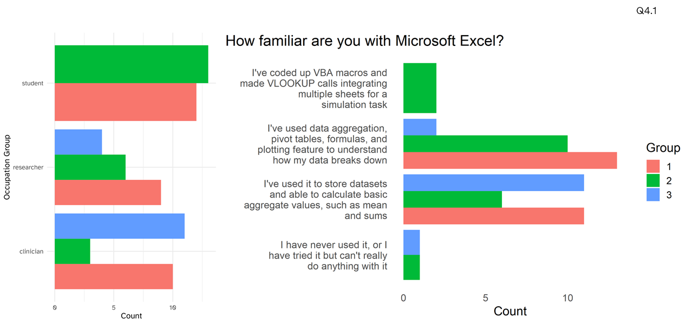Hierarchical Clustering for Personas
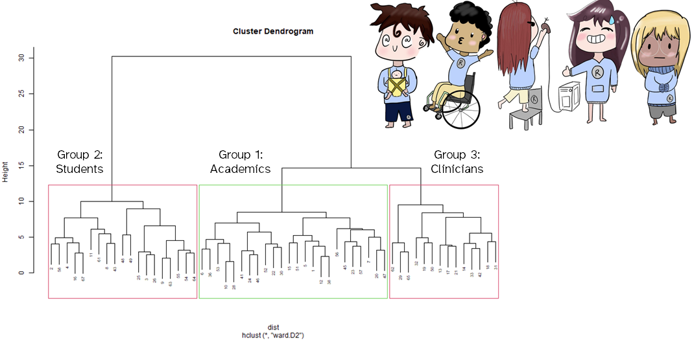Overall Persona Differences
- Ash Academic
- Samir Student
- Clare Clinician
stats::hclust()for clustering: https://github.com/chendaniely/dissertation-analysis/blob/master/analysis/030-persona/03-pca_clustering.Rmd#L191stats:cutree()for cutting the tree: https://github.com/chendaniely/dissertation-analysis/blob/master/analysis/030-persona/03-pca_clustering.Rmd#L222
Primary Target User
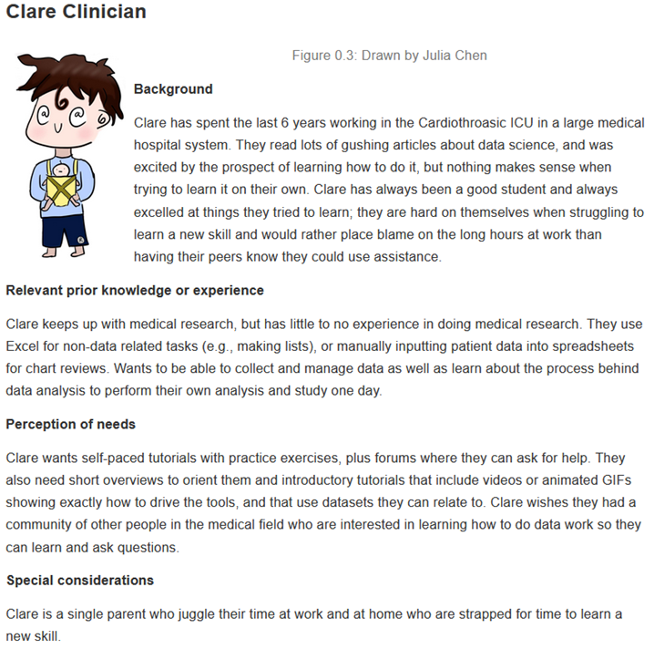- RStudio. Learner Personas. Published 2019. https://rstudio-education.github.io/learner-personas/
Biomedical Learner Persona Survey Conclusions
- First step in backward lesson decision: identify learners (learner personas)
- Have a way to create learner personas for the biomedical data science
- Survey tool validation allows others to create their own learner personas or help add to the current set of personas created in this study
- Identification of biomedical data science learner personas informs curriculum design
Assessing the Efficacy of Domain-Specific Data Science Curriculum in the Biomedical Sciences
How Learner Personas Can Guide Educational Needs in the Short-Term and Long-Term
Backward Design
- Identify your learners (learner persona)
- Plan out your lesson content (concept maps)
- Define overall goal (summative assessment)
- Break down the goal (formative assessment)
- Outline the the course
- Write a summary of the course
- Wilson G. Teaching Tech Together: How to Make Your Lessons Work and Build a Teaching Community around Them. Taylor & Francis; 2019. http://teachtogether.tech
Creating the Learning Materials
Managing Prior Knowledge
- Concept maps: graphic of a mental model
- Learner’s prior knowledge can help or hinder learning
- Ambrose SA, Bridges MW, DiPietro M, Lovett MC, Norman MK. How Learning Works: Seven Research-Based Principles for Smart Teaching. John Wiley & Sons; 2010.
- Benner P. Using the Dreyfus Model of Skill Acquisition to Describe and Interpret Skill Acquisition and Clinical Judgment in Nursing Practice and Education. Bulletin of Science, Technology & Society. 2004;24(3):188-199. doi:10.1177/0270467604265061
- Dreyfus SE, Dreyfus HL. A Five-Stage Model of the Mental Activities Involved in Directed Skill Acquisition. California Univ Berkeley Operations Research Center; 1980.
- Koch C, Wilson G. Software carpentry: Instructor Training. Published online June 2016. doi:10.5281/zenodo.57571
- Wilson G. Teaching Tech Together: How to Make Your Lessons Work and Build a Teaching Community around Them. Taylor & Francis; 2019. http://teachtogether.tech
Summative Assessment
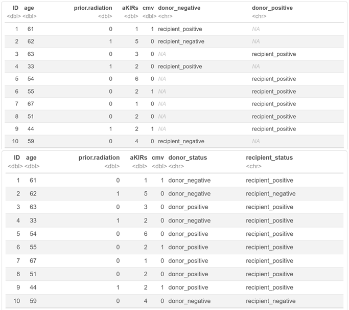
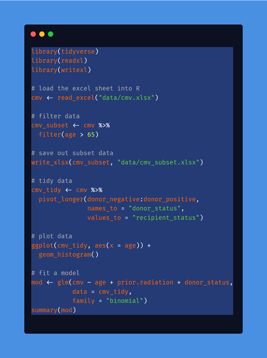
R + Python
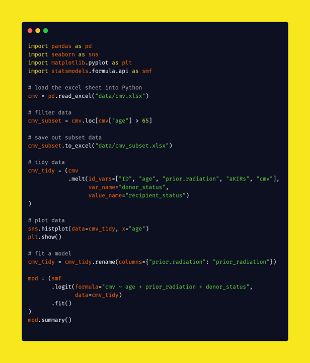
Are the Materials Effective?
- Create the materials
- Test retest design
- Pre, post, and long-term survey
- Workshop not classroom setting
- Assessment needs to be more flexible
- Questions need to be broken down for learners
- Ask about confidence not objective assessment
- Jordan K. Data Carpentry Assessment Report: Analysis of Post-Workshop Survey Results. Zenodo; 2016. doi:10.5281/zenodo.165858
- Jordan K. Analysis of The Carpentries Long-Term Impact Survey. Zenodo; 2018. doi:10.5281/zenodo.1402200
- Jordan KL, Marwick B, Duckles J, Zimmerman N, Becker E. Analysis of Software Carpentry’s Post-Workshop Surveys. Zenodo; 2017. doi:10.5281/zenodo.1043533
- Jordan KL, Marwick B, Weaver B, et al. Analysis of the Carpentries’ Long-Term Feedback Survey. Zenodo; 2017. doi:10.5281/zenodo.1039944
- Jordan KL, Michonneau F. Analysis of The Carpentries Long-Term Surveys (April 2020). Zenodo; 2020. doi:10.5281/zenodo.3728205
- Jordan K, Michonneau F, Weaver B. Analysis of Software and Data Carpentry’s Pre- and Post-Workshop Surveys. Zenodo; 2018. doi:10.5281/zenodo.1325464
Bloom’s Taxonomy
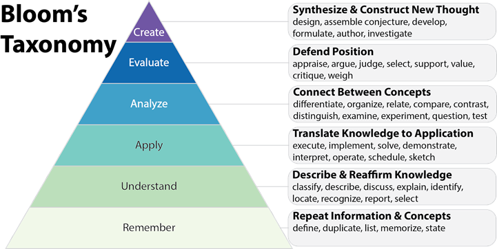
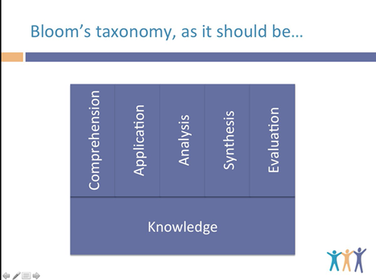
- 2020 Computing Curriculum Guidelines: Knowledge-based -> Competency-based
- Anderson LW, Bloom BS, others. A Taxonomy for Learning, Teaching, and Assessing: A Revision of Bloom’s Taxonomy of Educational Objectives. Longman,; 2001.
- Armstrong P. Bloom’s taxonomy. Vanderbilt University Center for Teaching. Published 2010. https://cft.vanderbilt.edu/guides-sub-pages/blooms-taxonomy/
- Bloom’s Taxonomy—That Pyramid is a Problem. Teach Like a Champion. Published April 3, 2017. Accessed November 29, 2021. https://teachlikeachampion.com/blog/blooms-taxonomy-pyramid-problem/
- CC2020 Task Force. Computing Curricula 2020: Paradigms for Global Computing Education. ACM; 2020. doi:10.1145/3467967
- Donald Clark Plan B: Bogus pyramids: Learning methods, Maslow and Bloom. Donald Clark Plan B. Published July 13, 2020. Accessed November 17, 2021. https://donaldclarkplanb.blogspot.com/2020/07/bogus-pyramids-learning-methods-maslow.html
Learning Objectives
- Name the features of a tidy/clean dataset
- Transform data for analysis
- Identify when spreadsheets are useful
- Assess when a task should not be done in a spreadsheet software
- Break down data processing into smaller individual (and more manageable) steps
- Construct a plot and table for exploratory data analysis
- Calculate, interpret, and communicate an appropriate statistical analysis of the data
Create Data Science Learning Materials
https://ds4biomed.tech/
- Introduction
- Spreadsheets
- R + RStudio
- Load Data
- Descriptive Calculations
- Clean Data (Tidy)
- Visualization (Intro)
- Analysis Intro (Logistic)
ds4biomed: https://ds4biomed.tech/
Part I
- Introduction
- Spreadsheets
- R + RStudio
- Load Data
- Descriptive Calculations
- Clean Data (Tidy)
- Visualization (Intro)
- Analysis Intro (Logistic)
Part II
- 30-Day Re-admittance
- Working with multiple datasets
- APIs
- Functions
- Survival Analysis
- Machine Learning Intro
Assessing Workshop Effacy
Workshop Attendees
- 8 Workshops
- 200 Attendees across 2 days
- 91 Responses
- 67 Pre-workshop
- 43 Post-workshop
- 11 Long-term
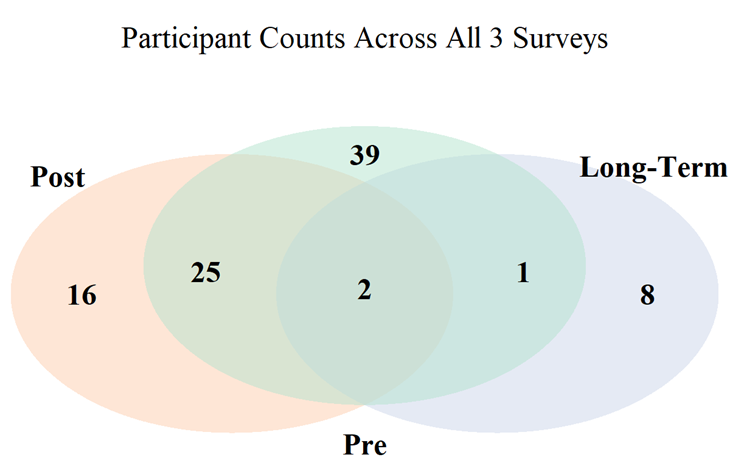
Pre-Post Results Overall
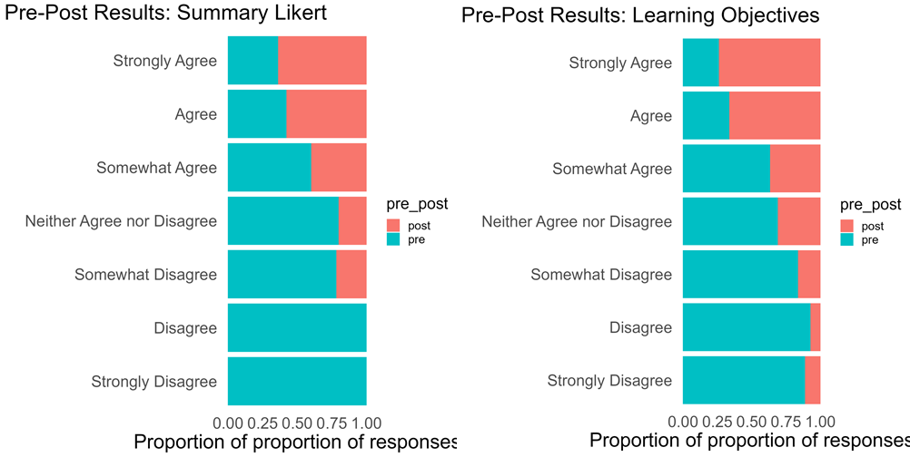Pre-Post-Long Results
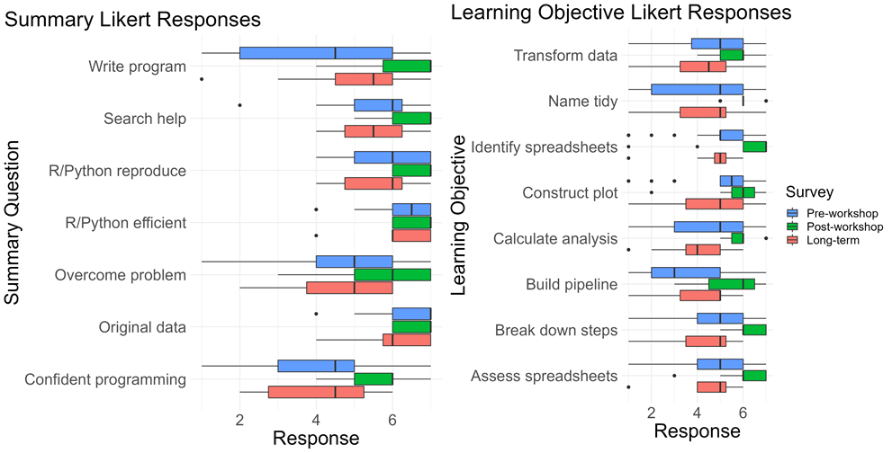Pre-Post-Long Composite
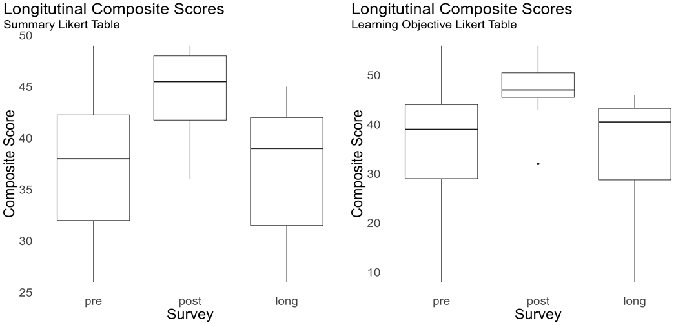Learning Material Effectiveness Conclusions
- Learner Personas and Concept Maps Help Curate Lesson Content
- Language-Agnostic Lessons Guide Presentation Order
- Data Science Lessons Differ from Computer Science Lessons
- Intermediate Materials will be difficult to plan
- Long-Term Practice is important
- Work on Relevant Problems Solidify skills
- Communities of Practice Provide Ongoing Learning and Scalability
Practical Implications
How Can I Use This Information?
Can explore your own (patient) data
Can work on curating your own data
Potentially faster research-question cycle
Continuing education
Design Your Own Materials
Create your own learner personas:
- Identify who your learners are
- Figure out what they need and want to know
- Plan a guided learning tract
- Use the surveys I’ve made with the data I’ve published
Teaching Knowledge
Content Knowledge: What the instructor knows
Curricular Knowledge: Curriculum materials to teach the content
Pedagogical Content Knowledge: How to teach the content
Overall Conclusions
- Objective way of backward design lesson development
- Domain-specific workshops seem beneficial to meet learning objectives
- Data science have different set of programming skills
- Long-term learning is more important
- Formative + summative assessments in long-term learning
- “10,000 hour rule”, “deliberate practice”, “forgetting curve”
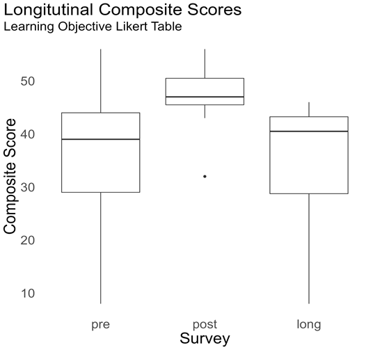
- Malcolm Gladwell: 10,000 Hour Rule
- László and Klara Polgár: deliberate practice
- Hermann Ebbinghaus: forgetting curve
Communities (of Practice)
- The Carpentires
- r/medicine (slack), r/pharma
- Tidy Tuesday*
- R-Ladies: https://rladies.org/
- Py-Ladies: https://pyladies.com/
- R4DS Community (slack): r4ds.io/join
- Nursing & Data Science Collaboratory (slack)
- OHDSI (MS Teams)
- Observational Health Data Sciences and Informatics
- Shrestha N, Barik T, Parnin C. Remote, but Connected: How #TidyTuesday Provides an Online Community of Practice for Data Scientists. Proc ACM Hum-Comput Interact. 2021;5(CSCW1):52:1-52:31. doi:10.1145/3449126
Teaching Tech Together: The Rules
- Be kind: all else is details.
- Remember that you are not your learners…
- …that most people would rather fail than change…
- …and that ninety percent of magic consists of knowing one extra thing.
- Never teach alone.
- Never hesitate to sacrifice truth for clarity.
- Make every mistake a lesson.
- Remember that no lesson survives first contact with learners…
- …that every lesson is too short for the teacher and too long for the learner…
- …and that nobody will be more excited about the lesson than you are.
- Wilson G. Teaching Tech Together: How to Make Your Lessons Work and Build a Teaching Community around Them. Taylor & Francis; 2019. http://teachtogether.tech
Daniel Chen. @chendaniely. Using Quarto. Slides: https://github.com/chendaniely/2022-04-28-pycon2022-eduSummit-practice